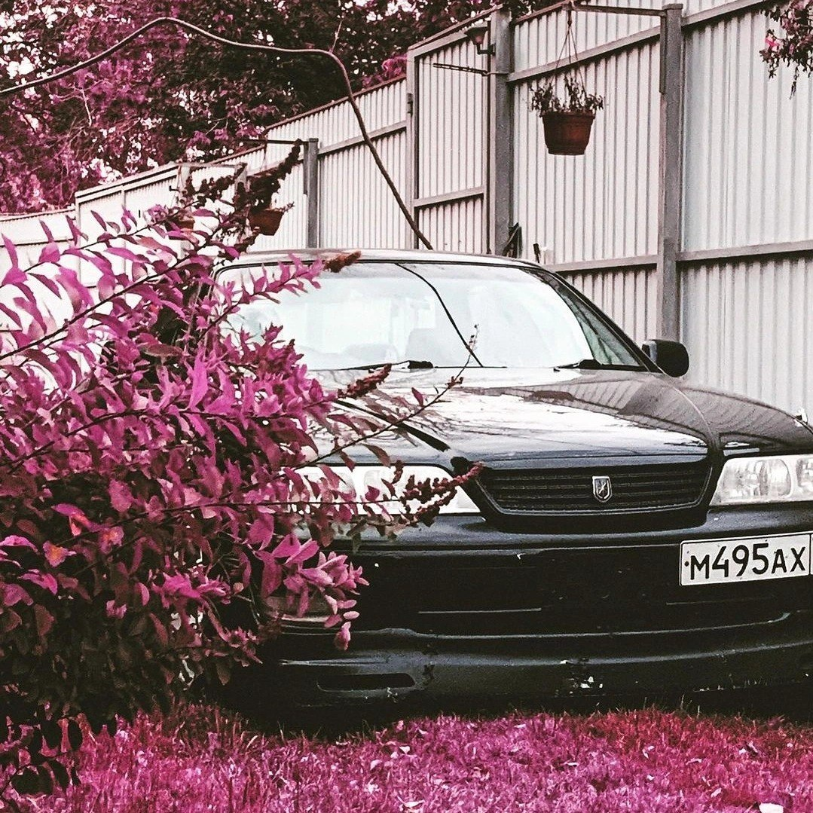

О себе
В свободное время предпочитаю заниматься спортом и отдаю большое предпочтение заработку денег, дабы наполнять свою голову новыми целями и мечтами, исполнять их / действовать дальше ! Но все таки есть та самая "душа" в моем любимом деле. Автомобили.. Двигатель мурлычет, как довольный кот, а подвеска — песня. Это не просто машина, это… чувство. Знаете, это ощущение, когда ты садишься за руль своего японского железного друга и понимаешь — вот оно, совершенство. Не эта вычурная европейская роскошь, блестящая, но холодная, а лаконичная, практичная, и при этом невероятно технологичная красота. У меня был во владении старенький MARK II — и это не просто средство передвижения, это продолжение меня самого. Каждая линия кузова, каждый изгиб приборной панели — продуман до мелочей. Не зря японцы славятся своим вниманием к деталям. Они вложили душу в этот автомобиль, и я это чувствую. Конечно, были и поломки. Но это лишь добавляет шарма. Ремонт — это тоже своего рода медитация, возможность поближе познакомиться со своим железным другом, понять его механику, его характер. И каждая отремонтированная деталь — это новая история, новый этап в наших отношениях. А как звучит его двигатель! Этот мелодичный рёв на высоких оборотах... Это не просто звук работы двигателя, это симфония техники, гимн инженерному гению. Не говорю, что японские автомобили — без недостатков. Но их достоинства покрывают все недостатки с лихвой. Надежность, практичность, технологичность, и да, это чудесное чувство единения с машиной. Это больше, чем просто автомобиль. Это культура, это философия, это JDM. И я горжусь, что я часть этой культуры.
Мечты
Любимая машина на картинке
Увлечения
• Автомобили: Я испытываю настоящую страсть к автомобилям. Для меня это не просто средство передвижения, а объект восхищения и увлечения. Люблю все, что связано с миром авто: от вождения до технического обслуживания.
• Вождение: Обожаю водить машину, получаю удовольствие от процесса управления автомобилем, особенно люблю путешествовать на машине и открывать новые места.
• Техническое обслуживание и ремонт: С удовольствием занимаюсь техническим обслуживанием своего автомобиля. Меня завораживает устройство машины, я люблю разбираться в ее механизмах и самостоятельно проводить несложный ремонт.
• Тюнинг и модификация: Я увлекаюсь тюнингом и внешним видом автомобиля. Мне нравится улучшать его характеристики и внешний вид, подстраивая под свой вкус.
• История автомобилей: Интересуюсь историей автомобилестроения, люблю узнавать о развитии разных марок и моделей автомобилей, изучать их конструктивные особенности.
• Автоспорт: Слежу за автоспортивными соревнованиями, люблю наблюдать за гонками и достижениями пилотов.
• Автотуризм: Обожаю путешествовать на машине, открывать новые города и страны, посещать интересные места за рулем своего автомобиля.